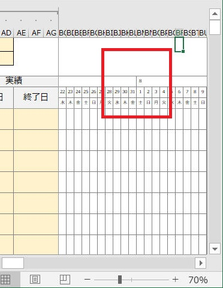

1. 機能概要
こんな感じの「Excelガントチャート」ツールを作っていきます。
図．全体図

図．スケジュール更新をコンテキストメニューから行う様子

図．設定１

図．設定２
図．注意事項など
「Excelガントチャート」を自作したので、以下でこのソフトウェアおよび作り方を紹介します。
仕事でもいろいろとガントチャートツールを利用しました。が、少しずつ何かが足りませんでした。
私が強く求めるのは以下のような機能でした。
これらの要望を満足する"Excelガントチャート"の実現を目指します。
こんな感じの「Excelガントチャート」ツールを作っていきます。
図．全体図
図．スケジュール更新をコンテキストメニューから行う様子
図．設定１
図．設定２
図．注意事項など
VBA 無しで、まずはベース部分を作ってみます。
要求事項はこんな感じで。
カレンダーの月、日の部分は一旦空欄にしておきます。ここは次の章で作っていきます。
ここでは下図のような感じでレイアウトを作ってみました。
「カテゴリ」はグルーピングなどを意識した項目です。「大分類」「中分類」など複数列にしても良いかもしれません。

サンプル： ダウンロード
引き続き VBA 無しで、条件付き書式、excelのセルへの関数指定、などでさらにベース部分を作りこみしてみます。
最初に日を表示する部分の書式を変更します。
"セルの表示設定" を "日のみ"(d) にします。"=date(Y1)"
とすることでも同じことをできますが、後で示す曜日の実現でこのセルには年月日の全ての情報を持っていてほしいので、表示形式で"日のみ"の表示を実現します。
続いて、カレンダーの最も左側の日付を「開始日」と同じ日にします。
それ以降の日を、一つ左側のセルの翌日とします。
左側から２つ目のセルを設定したらドラッグでOKです。


次に月の部分を作ります。
月表示は以下の条件で行います。
・最も左側のセルは月を表示
・各月の１日に対応するセルは月を表示
・以上の条件以外、空欄
"セルの書式設定" を "月のみ"(m)とします。

一番左側のセルは、真下と同じ日付を代入、月をそのまま無条件で表示します。

それ以外のセルは、参照するセルを各セルの真下として、日付が１のときだけ日付を代入し、それ以外は空欄を代入します。
次に曜日表示です。こちらは全部のセルが同じ手順です。
真上のセルを参照し、「=TEXT(AH5, "AAA")」という式で曜日を計算して表示してくれます。

今のままでは月の切り替わり部分、最終セルの右側、に罫線がありません。
美しくないので、ここに罫線を自動追加されるように "条件付き書式" を設定します。


月部分の全セルを選択後、"条件付き書式"を設定します。

これで月の切り替わりに罫線が入りました。

同様に、最終列に罫線を加える作業をします。最終列のセルに "END" という表記を入れてこれをマークにして書式指定します。

この場合は右側に縦の罫線を追加します。
こういう書式設定を行いました。

最終列にも罫線が入りました。

サンプル： ダウンロード
引き続き VBA 無しで、条件付き書式、excelのセルへの関数指定、などでさらにベース部分を作りこみしてみます。
計画、実績 の期間を入力したら、その内容に従ってガントチャート（図）を作図する処理を追加します。
VBA を使います。
描画済みのガントチャート(図)を全て削除する処理を追加します。これが無いとデバッグなどが不便ですよね。
「更新」ボタンをクリックすることで、描画済みのガントチャート(図)を全て消してから再度全てを再描画するようにします。
ただしガントチャート以外の図は消さないようにします。これを行わないとメモなどの図やテキストもすべて削除されてしまうので不便です。
独自の右クリックメニュー(コンテキストメニュー)を追加する方法を示します。
右クリックメニューとして「計画を設定」「実績を設定」を追加します。
合わせて、これらメニューを選択したときに対応する計画および実績のセルを更新します。
エクセルワークブックを閉じる際の後処理を実装します。
・独自のコンテキストメニューを削除します。
同様に、別のエクセルブックを使用するなどによりデアクティブになった際の処理を実装します。
・独自のコンテキストメニューを削除します。
以上の内容を全て（＋アルファ？）した Excelガントチャート を以下からダウンロードできます。
私自身が業務で使用することを目的にこれをブラッシュアップしているので、ここのが一番完成度が高いです。
使用ライセンスはエクセルシートに記載の通り "木下が使用を許可した人だけ" としています。要相談にて、ご連絡ください。
VBA についてはパスワードをかけていますが、ここのサイトを見れている人は以上の記事を参考に自分で作れますよね。
サンプルプログラム ダウンロード
| 2020-12-24 | - | v1.02 |
| - | [Bug-fix] 他のExcelシートのコンテキストメニューにこのガントチャートのオリジナルメニューが表示される場合がある、という不具合を修正。 | |
| 2020-07-09 | - | v1.01 |
| - | 祝日や任意の休みの表示に対応 | |
| - | １行または複数の行を切り取って別の場所へ挿入すると番号が崩れる、という課題を修正 | |
| 2020-07-07 | - | v1.00 |
| - | 新規作成 |
| 2021-01-04 | - | 記事本文を更新 |
| 2020-12-24 | - | サンプルプログラムを v1.02 へバージョンアップ |
| 2020-07-11 | - | サンプルプログラムを v1.01 へバージョンアップ |
| 2020-07-07 | - | 新規作成 |